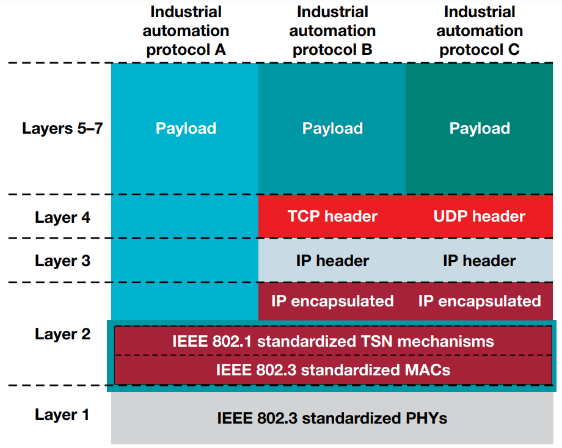
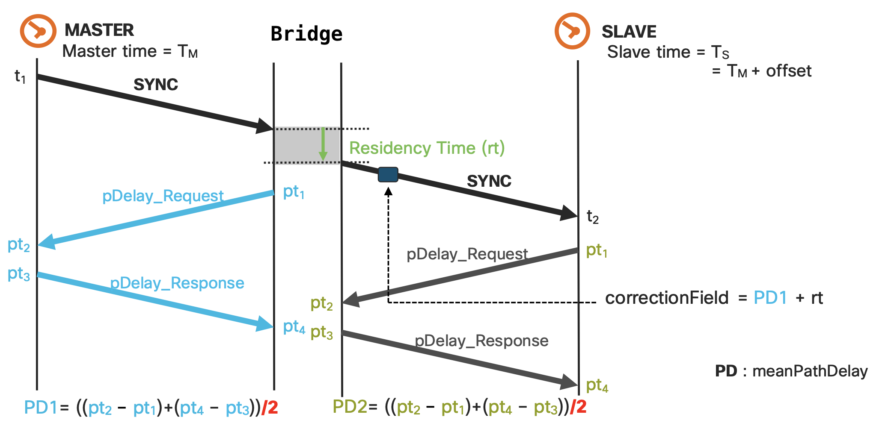

Time-Sensitive Networking over 5G system - Introduction (Rel-16)
Note
Author: Ya-shih Tseng
Date: 2023/7/12
This blog focuses on the role of the 5G system in 3GPP Release 16 TSN (Time-Sensitive Networking).
What is Time-Sensitive Network (TSN)
Traditional Ethernet technology can only achieve "best-effort" communication and cannot meet the high reliability and low latency requirements of industrial manufacturing applications.
Therefore, in the context of industrial automation, there is a need to upgrade the traditional "best-effort" Ethernet to provide "deterministic" services.
Time Sensitive Networking (TSN) brings determinism and real-time communication to standard Ethernet through mechanisms and protocols defined by the IEEE 802.1 standard, which is used by Audio Video Bridging (AVB) and TSN. It offers reliable message delivery, minimized jitter, and guaranteed delivery through central management, time scheduling, and other key features. The introduction of TSN technology holds great potential and benefits for real-time applications in industrial control, automation, and other fields.

TSN Standard
There are a lot of standards that TSN task group has completed or ongoing projects. Here are some base standards.
| Standard | Title |
|---|---|
| IEEE 1588 V2 | Precision Clock Synchronization Protocol for Networked Measurement and Control Systems |
| IEEE 802.1Q-2022 | Bridges and Bridged Networks |
| IEEE 802.1AB-2016 | Station and Media Access Control Connectivity Discovery (specifies the Link Layer Discovery Protocol (LLDP)) |
| IEEE 802.1AS-2020 | Timing and Synchronization for Time-Sensitive Applications |
| IEEE 802.1AX-2020 | Link Aggregation |
| IEEE 802.1CB-2017 | Frame Replication and Elimination for Reliability |
| IEEE 802.1CS-2020 | Link-local Registration Protocol |
The role of 5G system in TSN
With the increasing demands for wireless control in applications such as industrial automation, remote surgical operations, smart grid distribution automation, transportation safety, autonomous driving, and more, there is a growing need to meet the low-latency requirements of these applications while achieving management, scheduling, and traffic planning. Time synchronization becomes a critical aspect. The following will explain how the interaction between TSN and 5G systems enables time synchronization.
Time Synchronization
To achieve time synchronization between TSN and 5G systems, TSN utilizes the time synchronization method defined in IEEE 802.1AS, which is the generalized Precision Time Protocol (gPTP). gPTP supports time synchronization for Time-aware end stations and Time-aware Bridges in Layer 2. In the 3GPP TS23.501 release 16 specification, the 5G system plays the role of a "Time-aware system" as defined in IEEE 802.1AS and is designated as a Logical bridge, connecting TSN system end stations.
Note
gPTP is an extended version of PTP (Precision Time Protocol) that primarily expands support for second-layer network devices.
How can we synchronize the time of two end stations into the same time domain?
First, the time synchronization architecture includes Master clocks and Slave clocks. The Master regularly sends sync messages to allow the Slave to obtain the Master's time. The Slave, in turn, periodically sends peer delay requests to exchange messages with the Master, obtaining the delay time between the two devices for time correction. Additionally, the resident time, which is the message propagation delay introduced by bridges, should also be taken into account. By considering all these factors, the time synchronization of both sides can be achieved within the TSN time domain.

Check the link for more detail about how PTP works.
Intergration of TSN and 5G
By now, I believe you have gained an understanding of the time synchronization mechanism in TSN. Let's briefly explain how the 5G system supports TSN as a logical TSN bridge.
The 3GPP has defined new functionalities such as NW-TT, DS-TT, and TSN-AF, as well as TSN control nodes like CUC and CNC. Please check TS 23.501 Release 16 for more details.

System architecture of 5G support TSN
Support Ethernet type PDU session
To archive the intergration, 5G system should support ingress port and egress port pair via an Ethernet Type PDU session between the corresponding UE and UPF. As mentioned above, gPTP supports layer 2 (Ethernet) only.
DS-TT and NW-TT
In the 5G system, DS-TT (Device-side TSN translator) and NW-TT (Network-side TSN translator) serve as TSN translators. DS-TT is responsible for connecting TSN Slave endpoints with the UE, while NW-TT connects TSN Master endpoints with the UPF.
When the sync message generated by the Master clock reaches the bridge, NW-TT captures its Ingress Timestamp and measures the delay between NW-TT and the Master clock. These timestamps are then embedded within the sync message and transmitted to the UE. Once the UE receives the sync message, DS-TT calculates the resident time by subtracting the Ingress Timestamp provided in the sync message, from the Egress Timestamp which represents the time of sync message reception. The resident time is added to the delay time mentioned in the sync message to determine the corrected time. Through the assistance of the TSN translators, the Slave endpoint receives the message and obtains information about time deviation and other relevant data for further adjustment.
Note
DS-TT and NW-TT enable the 5G system to function as a virtual bridge. The bridge is also called "Transparent clock" which is definded in IEEE 1588 and required in IEEE 802.1AS. You can say that Master and Slaver don't know the exist of the 5G TSN bridge, since it's logical transparent.
"Transparent clocks are used to route timing messages within a network. Used when: Ethernet timing must pass through switches." - different type of clocks
TSN-AF
With TSN-AF, CNC can manage the 5G system functioning as a logical bridge and achieve the integration of the 5G TSN bridge with the TSN network in collaboration with NW-TT and DS-TT. Additionally, TSN-AF gathers information and capability lists of the 5G TSN Bridge and transmits them to CNC.
TSN control nodes
To meet the requirements of application services and control TSN, there are two key functions utilized in the TSN system.
CNC (Centralized Network Controller), as the central controller in the TSN system, receives the information from CUC (Centralized User Configuration) and performs scheduling and planning tasks. It calculates the optimal transmission schedule for the TSN traffic based on factors such as bandwidth requirements, latency constraints, and network conditions. Once the transmission schedule is computed and confirmed, CNC proceeds to deploy the necessary network resource configuration on the TSN switches. This ensures that the TSN network operates efficiently and effectively in delivering the required QoS (Quality of Service) for the application services.
Reference
- IEEE Std 802.1AS-2020: “IEEE Standard for Local and metropolitan area networks--Timing and Synchronization for Time-Sensitive Applications”.
- IEEE Std 1588: “IEEE Standard for a Precision Clock Synchronization Protocol for Networked Measurement and Control Systems”, Edition 2019.
- 3GPP TS 23.501 Release 16
- Time-Sensitive Networking - Wikipedia
- Time-Sensitive Networking (TSN) Task Group | - IEEE 802.1
About
Hi, This is Ya-shih Tseng. I am currently researching the implementation of 5G TSN (Time-Sensitive Networking) as part of my master's studies. In the future, I will introduce more information about TSN. Hope you enjoy it.